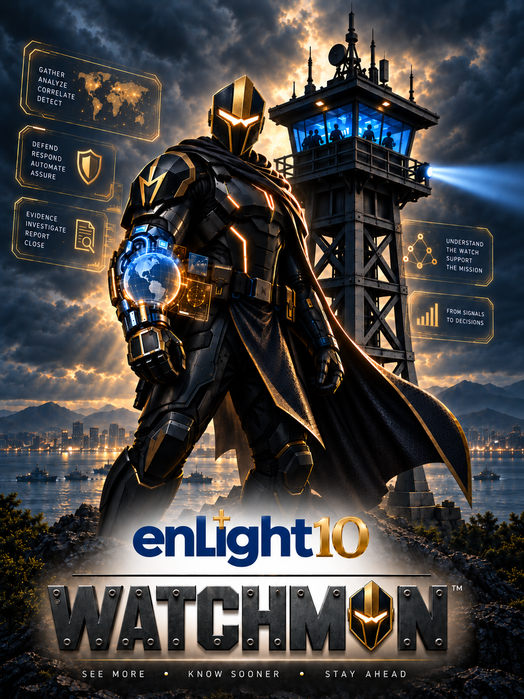

WATCHFLOOR
Understand the operational picture.
Ask Watchman™ to help explain what is drawing attention, understand the current view, and move into the workspace where deeper analysis belongs.
The AI assistant built into Watchtower™
WATCHMAN™
Watchman™ is the context-aware AI assistant built into Watchtower™.
It works alongside the operator across the Watchtower™ environment—understanding where you are, what you are looking at, and the context surrounding the work—so you can move from questions to understanding and from understanding to the right next step without leaving the operational picture.
Ask. Understand. Navigate. Investigate. Act with authority.
SEE MORE · KNOW SOONER · STAY AHEAD
01 / Already in context
Most AI assistants begin with an empty conversation.
Watchman™ begins with the operational context already in front of you.
The active workspace, selected object, current time perspective, investigation context, evidence references, and other authorized Watchtower™ context can travel with the interaction. That means an operator can ask:
“What am I looking at?”
“Why is this important?”
“Show me the evidence behind this.”
“What changed?”
“Where should I go next?”
Watchman™ does not require the analyst to repeatedly reconstruct the situation in a prompt.
It works from the same governed operating picture.
02 / One global interaction layer
Watchman™ is not another workspace to manage.
It is a global interaction layer that follows the operator across the Watchtower™ environment.
Understand the operational picture.
Ask Watchman™ to help explain what is drawing attention, understand the current view, and move into the workspace where deeper analysis belongs.
Understand signals in context.
Explore observations, signals, activity, temporal patterns, and the information contributing to what Watchtower™ is seeing.
Understand the environment around the finding.
Explore entities, relationships, infrastructure context, and the connections that change the meaning of an event.
Stay grounded in the Case.
Work from the active investigation, associated artifacts, evidence, and operational context without starting the reasoning process over again.
Connect operations to assurance.
Understand control and verification context and move between operational findings and the assurance picture they affect.
Trace how Watchtower™ reached the result.
Follow a result back toward its Run, Source, interpretation, and supporting context while preserving the distinction between machine assistance and human judgment.
Understand the endpoint before taking action.
Examine endpoint context and evidence, then move into the appropriate governed workbench when operator action is required.
03 / In the flow of work
There is one primary Watchman™ entry point throughout Watchtower™.
Open it from the global Watchtower™ shell and Watchman™ meets you in the context of the work already on screen.
No duplicate chatbot buttons.
No separate AI dashboard.
No need to leave the workflow to ask for help.
Watchman™ can explain the workspace and its purpose.
Watchman™ can help translate the current view into understandable operational context.
When the operator changes to a materially different context, Watchman™ makes that transition visible rather than silently changing the subject of the conversation.
The operator decides whether to continue with the new context or keep the current one.
04 / From understanding to the next step
Watchman™ is designed to help an operator move through Watchtower™—not simply generate text.
Within its authorized interaction boundary, Watchman™ can help:
FOCUS
Bring the relevant object or area of the workspace into view.
FILTER
Apply an available view of the current information.
TIME
Move the operational view to an appropriate temporal perspective.
NAVIGATE
Take the operator to the Watchtower™ workspace where the next part of the work belongs.
OPEN WORKBENCH
Hand the operator into the governed interface where consequential work can be reviewed and performed.
The principle is simple:
Watchman™ can guide the work without becoming the authority for the work.
05 / Assistance ≠ authority
06 / Governed by design
Watchman™ does not treat whatever appears in a browser or prompt as authority.
Context supplied by the interface is treated as a hint until Watchtower™ validates it against the authenticated tenant, workspace, object, permissions, and applicable parent relationships.
Invalid, stale, unauthorized, or mismatched context fails closed.
That separation matters in high-assurance environments.
It helps prevent an AI interaction from quietly expanding access, changing the subject, or converting untrusted input into operational authority.
Watchman™ is designed for environments where an answer is not enough.
When Watchman™ participates in governed execution, Watchtower™ can preserve the accountability history surrounding that run—including the authenticated principal, task, resolved capability, context, registered tools, resulting artifacts, denials or errors, timestamps, trace information, and applicable execution limits.
The system preserves structured rationale and policy outcomes without treating private model reasoning as an operational record.
The result is an assistance model designed around traceability rather than invisible autonomy.
If provider reasoning is unavailable, Watchtower™ does not need to invent an answer.
Deterministic product Help can remain available.
If context cannot be validated, the system can retain the last valid context rather than pretending the transition succeeded.
If authority is missing, Watchman™ does not manufacture it.
Useful when available. Predictable when constrained. Governed by design.
07 / A connected operating model
Watchman™ is part of the Watchtower™ operating model.
It sits above the individual workflows and helps operators move across them while Watchtower™ maintains the underlying system of record, evidence, policy, and authority.
Ask a question.
Explain the environment.
Paste the finding.
Reconstruct the Case.
Describe the endpoint.
Find the right page.
Repeat.
Start from the work already in front of you.
Context follows the interaction.
Evidence remains connected.
Authority remains governed.
The operator stays in control.

08 / Vigilance and responsibility
The Watchman™ name comes from an enduring image of vigilance: someone positioned to see, understand, and give warning.
“Go, station the lookout, let him report what he sees.”
— Isaiah 21:6
Scripture repeatedly uses the watchman as a picture of vigilance and responsibility.
For enLight10, that imagery fits the operating principle behind Watchman™:
See clearly.
Understand what matters.
Bring attention to what requires action.
Remain accountable for the watch.
The name does not mean software replaces human responsibility.
Quite the opposite.
Watchtower™ is intentionally designed so the human entrusted with the mission retains authority, while Watchman™ helps that person maintain the watch.
The enLight10 philosophy
Watchman™ is one part of a larger enLight10 philosophy.
enLight10
Light reveals truth and brings understanding.
Watchtower™
The elevated operating picture brings fragmented information into perspective.
Watchman™
The context-aware assistant helps maintain awareness, explain what is seen, and guide the operator toward the next governed step.
Together, they support a simple mission:
See clearly. Decide deliberately. Prove the outcome.
Maintain the watch
Bring a real workflow, your existing security tools, and a problem your team needs to understand faster.
See how Watchtower™ and Watchman™ can turn fragmented operational information into a governed path from signal to decision to evidence.
{kind=link}